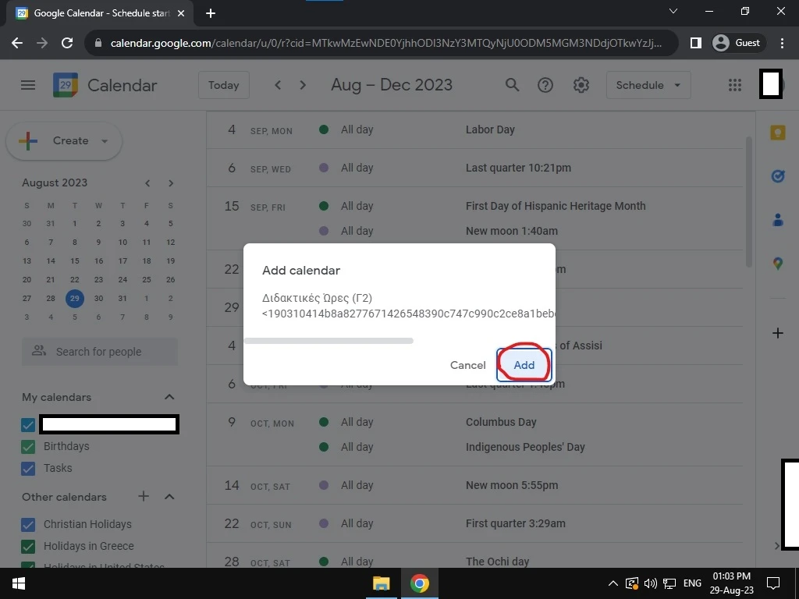
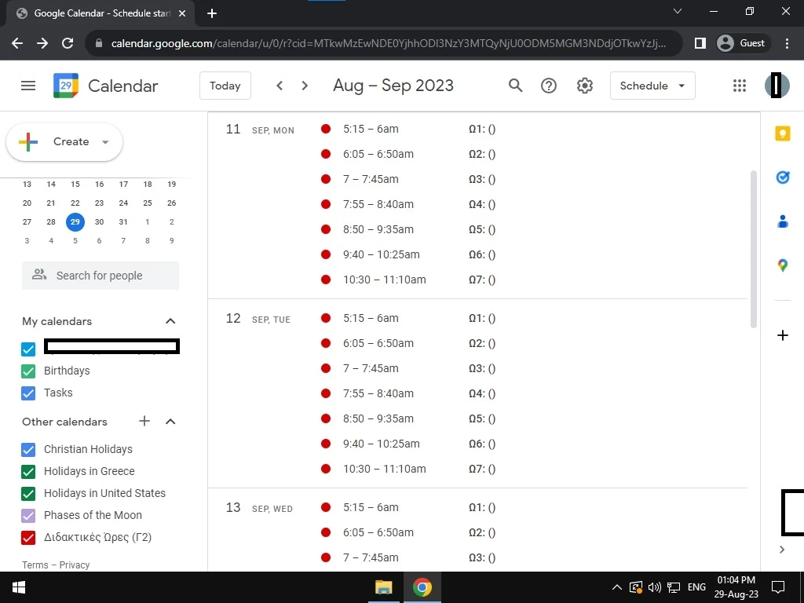

Προσθέστε το πρόγραμμα μαθημάτων στο Google Calendar του λογαριασμού σας, σε 2 βήματα. Αυτά τα βήματα καλύπτουν παράλληλα και μέχρι το βήμα 4 του οδηγού για Android.
Πατήστε πάνω σε κάθε σύνδεσμο του τμήματός σας παρακάτω, ή αντιγράψτε τον με το κουμπί δίπλα και επικολλήστε τον στη μπάρα διευθύνσεων του browser.
Στο παράθυρο που ανοίγει, πατήστε Προσθήκη.

Πατήστε πάνω σε μια εικόνα για μεγέθυνση.
Συγχαρητήρια — θα πρέπει να φαίνεται κάπως έτσι:

Αν κάτι δεν φαίνεται σωστά, επικοινωνήστε μαζί μου.